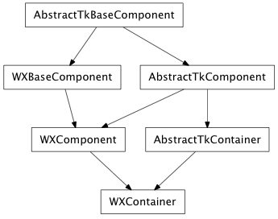

Bases: enaml.widgets.component.Component
A Component subclass that provides for laying out its child Components.
An object that manages the layout of this component and its direct children. The default is constraints based layout.
A list of user-specified linear constraints defined for this container.
Overridden parent class trait
Initialize the layout for the first time. Called at the end of the setup process.
Reimplemented parent class method which triggers an update of the constraints and a layout refresh. This is called whenever the children of the component should have their layout refreshed. The constraints update and relayout occur immediately and are completed before the method returns.
Reimplemented parent class method which triggers an update of the constraints and a layout refresh at some point in the future.
Reimplemented parent class method which triggers a rearrange of the children.
Reimplemented parent class method which triggers a rearrange of the children at some point in the future.
Reimplemented parent class method which triggers a rearrange after adding the callable to the queue.
Reimplemented parent class method which trigger a rearrange after after adding the callable to the queue.

Bases: enaml.widgets.qt.qt_component.QtComponent, enaml.widgets.container.AbstractTkContainer
A Qt4 implementation of Container.
QtContainer is usually to be used as a base class for other container widgets. However, it may also be used directly as an undecorated container for widgets for layout purposes.

Bases: enaml.widgets.wx.wx_component.WXComponent, enaml.widgets.container.AbstractTkContainer
A wxPython implementation of Container.
WXContainer is usually to be used as a base class for other container widgets. However, it may also be used directly as an undecorated container for widgets for layout purposes.
Note